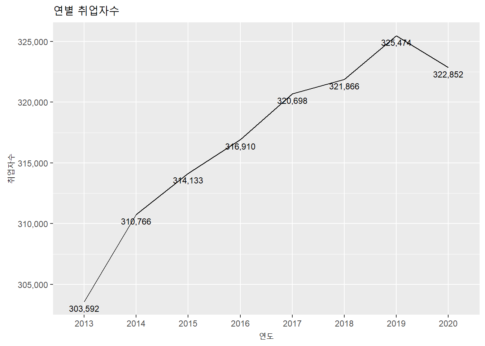
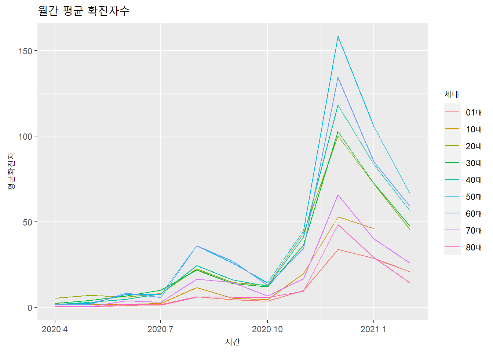
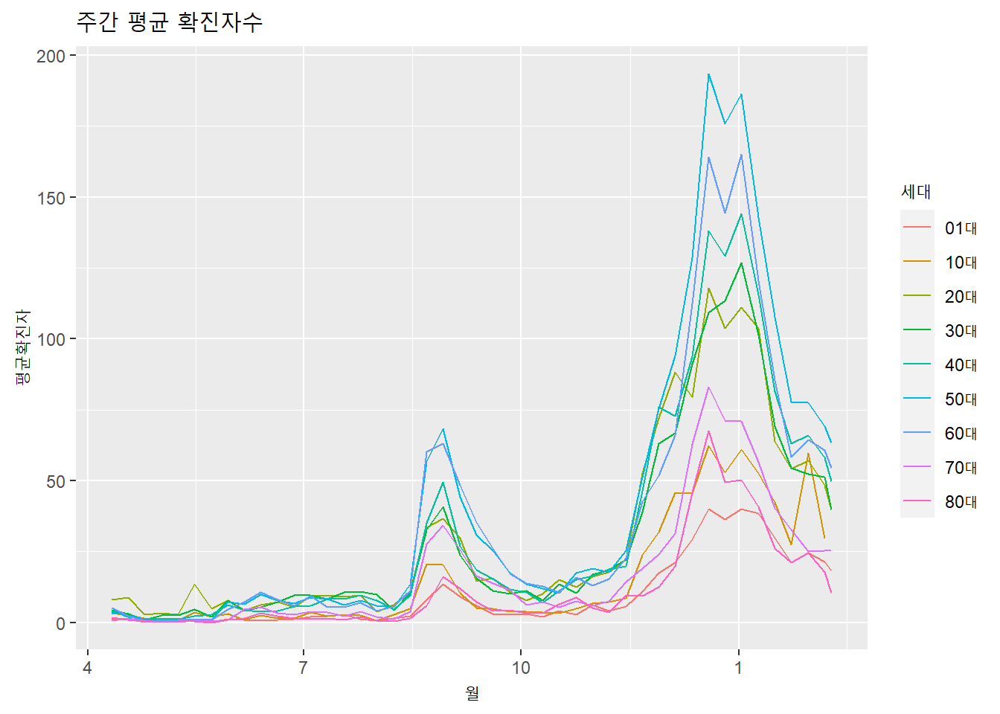
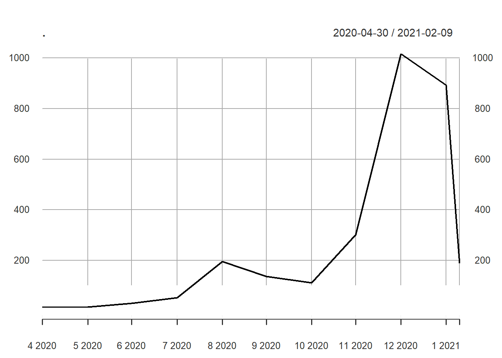
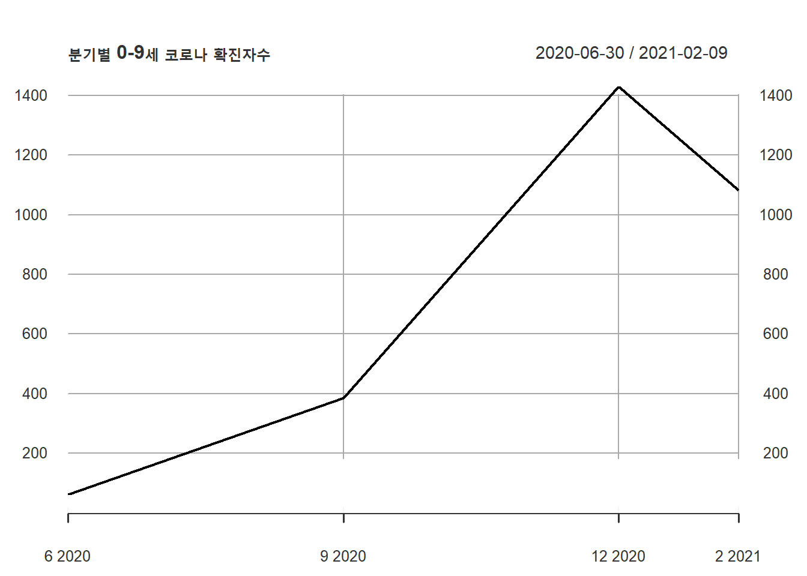

4.4 주간, 월간 데이터 합계, 평균은? : 시간 Grouping
시계열 데이터를 사용할 때 많이 사용하는 계산은 월별 평균, 주별 합계 등 일정 단위별로 그룹핑한 후 그룹함수를 적용하여 산출하는 작업이다.
아쉽게도 앞서 사용한 lubridate 패키지에서는 시계열 데이터를 주 단위, 월 단위, 년단위 등으로 그룹핑하는 함수를 제공하지 않는다. 따라서 lubridate 함수를 이용하여 그룹화하기 위해서는 dplyr에서 제공하는 파이프 연산자인 %>%와 앞에 설명한 시간 정보 추출 함수를 같이 사용하여 산출할 수 있다.
하지만 앞장에서 소개한 timetk 패키지에서는 그룹핑하여 평균을 내거나 합계를 내는 함수를 제공하기 때문에 이를 사용할 수도 있다.
이번 절에서는 lubridate와 dplyr를 사용하는 방법과 timetk를 사용하는 방법으로 분리해서 설명하겠다.
- 데이터프레임 :
lubridate,dplyr패키지
데이터프레임으로 저장된 시계열 데이터의 그룹핑은 먼저 그룹핑을 하기 위한 단위를 설정하기 위해 lubridate 패키지의 year(), month(), week() 등의 함수를 사용하여 해당 일의 년, 월, 주등을 산출하고 mutate 함수를 사용하여 컬럼으로 만들어준다. 다음 group_by 함수를 사용하여 데이터를 그룹핑하고 summarise 함수를 통해 sum(), mean() 등의 그룹 함수를 사용하여 원하는 값을 산출한다.
library(dplyr)
library(ggplot2)
### 월별 취업자수를 연별 취업자수로 그룹핑
(employees.by.year <- employees %>%
mutate(year = year(time)) %>%
group_by(year) %>%
summarise(total.year = sum(total),
employees.edu = sum(employees.edu)))## # A tibble: 8 x 3
## year total.year employees.edu
## <dbl> <int> <int>
## 1 2013 303592 21192
## 2 2014 310766 21957
## 3 2015 314133 22028
## 4 2016 316910 22350
## 5 2017 320698 22886
## 6 2018 321866 22165
## 7 2019 325474 22600
## 8 2020 322852 21570employees.by.year %>%
ggplot(aes(as.factor(year), total.year)) +
geom_line(aes(group = 1)) +
geom_text(aes(label = scales::number(total.year, big.mark = ',')), size = 3, vjust = 1.5) +
labs(title = '연별 취업자수', x = '연도', y = '취업자수') +
scale_y_continuous(labels = scales::number_format(big.mark = ','))
### 일별 평균 확진자수를 산출
(mean.covid19.by.age <- covid19 %>%
mutate(yearmon = yearmonth(date)) %>%
group_by(yearmon) %>%
summarise(`01대` = mean(`0-9세`),
`10대` = mean(`10-19세`),
`20대` = mean(`20-29세`),
`30대` = mean(`30-39세`),
`40대` = mean(`40-49세`),
`50대` = mean(`50-59세`),
`60대` = mean(`60-69세`),
`70대` = mean(`70-79세`),
`80대` = mean(`80세 이상`)))## # A tibble: 11 x 10
## yearmon `01대` `10대` `20대` `30대` `40대` `50대` `60대` `70대` `80대`
## <mth> <dbl> <dbl> <dbl> <dbl> <dbl> <dbl> <dbl> <dbl> <dbl>
## 1 2020 4 0.636 1.91 5.45 2.55 1.82 1.86 1.64 0.773 0.682
## 2 2020 5 0.533 2.07 7.13 4.13 3.03 2.4 1.8 0.5 0.4
## 3 2020 6 1.11 1.71 6.11 6.71 4.89 7.61 8.39 3.93 2
## 4 2020 7 1.71 2.39 8.32 10.1 8.03 7.55 5.97 3.13 1.35
## 5 2020 8 6.32 11.7 22.6 22 24.6 36.1 36.0 16.7 6.06
## 6 2020 9 4.53 5.37 14.7 13.9 16.2 26.1 27.1 14.7 6.17
## 7 2020 10 3.73 4.57 12.9 12.1 12.4 14.5 13.2 6.63 5.77
## 8 2020 11 10.0 19.8 43.3 36.5 41.1 44.9 34.4 16.9 9.47
## 9 2020 12 33.9 53.0 100. 103. 118. 158. 134. 65.9 48.4
## 10 2021 1 28.8 46.2 72.3 72.5 83.5 106. 85.2 40.0 29.1
## 11 2021 2 20.9 NA 45.8 47.7 56.7 66.7 59.1 26 14.3코드 설명
covid19 데이터프레임을
%>%로mutate()에 전달mutate()를 사용하여 date에서 뽑은 연도, 월(yearmonth())를 yearmon 열에 저장group_by()로 yearmon 열로 그룹핑한후summarise()를 사용하여 연령대별 평균을 각각의 열로 저장
mean.covid19.by.age %>%
tidyr::gather(category, value, 2:10) %>%
ggplot(aes(x = yearmon, y = value)) +
geom_line(aes(group = category, color = category)) +
labs(title = '월간 평균 확진자수', x = '시간', y = '평균확진자', color = '세대')
데이터 프레임 시계열 데이터 그룹핑의 또 하나의 방법은 tibbletime 패키지에서 제공하는 collapse_by() 함수를 사용하는 방법이다. 이 방법을 사용하기 위해서는 tibbletime 패키지를 설치, 로딩해야하며 데이터프레임을 tbl_time 클래스 객체로 변환해야 한다. 변환된 tbl_time 객체에 적용된 collapse_by()는 시간 인덱스열을 직접 컨트롤하여 매개변수로 전달된 기간마다 데이터를 접은(collapse) 후에 group_by() 함수를 이용해 그룹핑하여 기간별 데이터를 산출할 수 있다.4 접힌 데이터의 시간 인덱스는 접힌 마지막날로 날짜가 바뀌어서 저장된다.
library(tibbletime)
as_tbl_time(covid19, index = date) %>%
collapse_by('weekly') %>%
group_by(date) %>%
summarise(`01대` = mean(`0-9세`),
`10대` = mean(`10-19세`),
`20대` = mean(`20-29세`),
`30대` = mean(`30-39세`),
`40대` = mean(`40-49세`),
`50대` = mean(`50-59세`),
`60대` = mean(`60-69세`),
`70대` = mean(`70-79세`),
`80대` = mean(`80세 이상`)) %>%
tidyr::gather(category, value, 2:10) %>%
ggplot(aes(x = date, y = value)) +
geom_line(aes(group = category, color = category)) +
labs(title = '주간 평균 확진자수', x = '월', y = '평균확진자', color = '세대')
코드 설명
as_tble_time()을 사용하여 covid19데이터 프레임을tibbletime클래스로 변환collapse_by()를 이용하여 주간단위로 데이터를 접어줌.group_by()로 주간 단위로 바뀌어진 날짜로 groupingsummarise()로 각 세대별 합계값을 구해 열을 생성plotting을 위해
gather()를 사용해 넓은 형태 데이터를 긴 형태 데이터로 변환. 열 이름들을 저장할 열은 category, 열에 저장된 값을 저장할 열은 value, category에 저장될 열들은 2번째부터 10번째 까지임.ggplot()로 다변량 라인 plot 생성
- 데이터프레임 :
timetk패키지
데이터프레임으로 저장된 시계열 데이터에 대한 그룹핑의 추가적 방법은 timetk 패키지의 summarise_by_time() 를 사용하는 것이다. 매개변수인 .date_var(시간컬럼), .by(그룹핑 단위)를 사용하여 시간 열과 그룹핑 단위를 설정하면 설정된 단위대로 데이터를 그룹핑해준다. 이 방법을 통해 시간을 그룹핑하고 그룹핑된 범위에 해당하는 데이터에 원하는 작업을 수행하여 값들을 얻을 수 있다.
library(timetk)
covid19 %>%
summarise_by_time(.date_var = date, .by = 'week',
`01대` = mean(`0-9세`),
`10대` = mean(`10-19세`),
`20대` = mean(`20-29세`),
`30대` = mean(`30-39세`),
`40대` = mean(`40-49세`),
`50대` = mean(`50-59세`),
`60대` = mean(`60-69세`),
`70대` = mean(`70-79세`),
`80대` = mean(`80세 이상`)) %>%
tidyr::gather(category, value, 2:10) %>%
ggplot(aes(x = date, y = value)) +
geom_line(aes(group = category, color = category)) +
labs(title = '주간 평균 확진자수', x = '월', y = '평균확진자', color = '세대')
코드 설명
%>%을 사용하여summarise_by_time()에 covid19를 전달하고 그룹핑에 사용할 열(.date_var =)과 그룹핑 주기(.by = 'week')를 설정이후 각 열에 함수(
mean())를 적용.plotting을 위해
gather()를 사용해 넓은 형태 데이터를 긴 형태 데이터로 변환. 열 이름들을 저장할 열은 category, 열에 저장된 값을 저장할 열은 value, category에 저장될 열들은 2번째부터 10번째 까지임.ggplot()로 다변량 라인 plot 생성
employees %>%
summarise_by_time(.date_var = time, .by = 'month',
total.year = sum(total),
employees.edu = sum(employees.edu)) %>%
head(10)## # A tibble: 10 x 3
## time total.year employees.edu
## <date> <int> <int>
## 1 2013-01-01 24287 1710
## 2 2013-02-01 24215 1681
## 3 2013-03-01 24736 1716
## 4 2013-04-01 25322 1745
## 5 2013-05-01 25610 1774
## 6 2013-06-01 25686 1786
## 7 2013-07-01 25681 1813
## 8 2013-08-01 25513 1811
## 9 2013-09-01 25701 1794
## 10 2013-10-01 25798 1790코드 설명
%>%을 사용하여summarise_by_time()에 employees를 전달하고 그룹핑에 사용할 열(.date_var =)과 그룹핑 주기(.by = 'month')를 설정이 후 total에 함수(
sum())를 적용.
tsibble: index_by() 함수
tsibble 객체는 데이터프레임 객체와 동일하게 핸들링 할 수 있다. 하지만 tsibble 객체에서만 동작하는 함수인 index_by()를 사용하면 쉽게 구할 수 있다. index_by()는 tsibble 객체 생성시 지정한 index 컬럼을 사용하여 grouping한 새로운 컬럼을 생성한다. 여기서 주의해야할 사항은 grouping 함수 앞에 ~를 붙여야 한다는 것과 grouping 함수의 매개변수로 ‘.’을 사용해야 한다는 점이다.’.’의 의미는 index 컬럼을 사용한다는 의미이다.
grouping 주기는 다음과 같다.
| 함수명 | 주기 |
|---|---|
| lubridate::year | 연도 주기 |
| yearquarter | 분기 주기 |
| yearmonth | 월 주기 |
| yearweek | 주 주기 |
| as.Date | 일 주기 |
| celling_date, floor_date, round_date | 상세 주기 |
employees.tsibble%>%
index_by(yearqtr = ~ yearquarter(.)) %>%
summarise(sum.qtrly = sum(total)) %>%
head(10)## # A tsibble: 10 x 2 [1Q]
## yearqtr sum.qtrly
## <qtr> <int>
## 1 2013 Q1 73238
## 2 2013 Q2 76618
## 3 2013 Q3 76895
## 4 2013 Q4 76841
## 5 2014 Q1 75629
## 6 2014 Q2 78275
## 7 2014 Q3 78676
## 8 2014 Q4 78186
## 9 2015 Q1 76629
## 10 2015 Q2 79024covid19.tsibble[, c(1,3)]%>%
index_by(yearweek = ~ yearweek(.)) %>%
summarise(sum.weekly = sum(`0-9세`)) %>%
head(10)## # A tsibble: 10 x 2 [1W]
## yearweek sum.weekly
## <week> <dbl>
## 1 2020 W15 4
## 2 2020 W16 8
## 3 2020 W17 3
## 4 2020 W18 -1
## 5 2020 W19 1
## 6 2020 W20 6
## 7 2020 W21 1
## 8 2020 W22 8
## 9 2020 W23 7
## 10 2020 W24 3index_by()를 사용할 때 장점은 grouping 기간을 자유자재로 설정할 수 있다는 점이다. 월, 분기, 년과 같이 달력상의 주기 외에 ‘매 4일마다,’ ’매 2달마다’와 같이 주기를 설정할 수 있다.
covid19.tsibble[, c(1,3)]%>%
index_by(twoweek = ~ lubridate::floor_date(., "2 month")) %>%
summarise(sum.2week = sum(`0-9세`)) %>%
head(10)## # A tsibble: 6 x 2 [1D]
## twoweek sum.2week
## <date> <dbl>
## 1 2020-03-01 14
## 2 2020-05-01 47
## 3 2020-07-01 249
## 4 2020-09-01 248
## 5 2020-11-01 1317
## 6 2021-01-01 1081covid19.tsibble[, c(1,3)]%>%
index_by(fourday = ~ lubridate::floor_date(., "4 day")) %>%
summarise(sum.4days = sum(`0-9세`)) %>%
head(10)## # A tsibble: 10 x 2 [1D]
## fourday sum.4days
## <date> <dbl>
## 1 2020-04-09 4
## 2 2020-04-13 5
## 3 2020-04-17 3
## 4 2020-04-21 0
## 5 2020-04-25 2
## 6 2020-04-29 0
## 7 2020-05-01 0
## 8 2020-05-05 1
## 9 2020-05-09 1
## 10 2020-05-13 5xts
xts 객체의 월별, 분기별, 연별 그룹핑 값을 구하기 위해서 제공하는 함수는 ’apply.’으로 시작하는 함수이다.이 함수에 xts 객체와 적용하고자 하는 함수(sum, mean 등)을 전달하면 값을 산출할 수 있다.
apply. 계열 함수는 다음의 5가지가 있다. 산출된 결과는 plot.xts()로 간단히 plotting 할 수 있다.
| 함수명 | 설명 |
|---|---|
| apply.daily(xts객체, 함수명) | 일별로 함수를 적용한 결과값 반환 |
| apply.weekly(xts객체, 함수명) | 주별로 함수를 적용한 결과값 반환 |
| apply.monthly(xts객체, 함수명) | 월별로 함수를 적용한 결과값 반환 |
| apply.quarterly(xts객체, 함수명) | 분기별로 함수를 적용한 결과값 반환 |
| apply.yearly(xts객체, 함수명) | 년별로 함수를 적용한 결과값 반환 |
library(xts)
apply.quarterly(employees.xts, sum) %>% head(10)## [,1]
## 2013-03-01 78345
## 2013-06-01 81923
## 2013-09-01 82313
## 2013-12-01 82203
## 2014-03-01 80977
## 2014-06-01 83779
## 2014-09-01 84226
## 2014-12-01 83741
## 2015-03-01 82095
## 2015-06-01 84488apply.yearly(employees.xts, sum) %>% plot.xts()
apply.monthly(covid19.xts[,1], sum) %>% plot.xts(main = '월별 0-9세 코로나 확진자수')
apply.quarterly(covid19.xts[,1], sum) %>% plot.xts(main = '분기별 0-9세 코로나 확진자수')
ts
ts 객체는 다음장부터 다뤄질 시계열 분석 패키지인 forecast 패키지에서 중요하게 사용되는 객체이다. 하지만 앞선 데이터프레임이나 xts 처럼 핸들링이 용이하지 않다. 따라서 데이터 핸들링을 위해서는 데이터프레임이나 xts 객체로 변환하여 사용하는 것이 정신 건강에 좋다.
코드 설명
employees 데이터프레임에서
mutate()를 사용하여 time에서 뽑은 연도(year())를 year 열에 저장group_by()로 year 열로 그룹핑한후summarise()를 사용하여 전체 취업자수의 합계를 total.year, 교육서비스업의 합계 employees.edu 열을 생성최종 결과를 employees.by.year에 저장